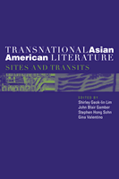

Exploring the transnational dynamics of Asian American literature
Exploring the transnational dynamics of Asian American literature


 Exploring the transnational dynamics of Asian American literature
Exploring the transnational dynamics of Asian American literature

|  |
Transnational Asian American LiteratureSites and Transitsedited by Shirley Geok-lin Lim, John Blair Gamber, Stephen Hong Sohn and Gina Valentinopaper EAN: 978-1-59213-451-9 (ISBN: 1-59213-451-3) |
"Increasingly commonplace yet still elusive, ideas of 'transnationalism' and 'diaspora' in Asian American studies get an energetic boost from this collection of highly readable critical essays. Looking for the cross-national, cross-cultural, and cross-linguistic, and searching for global identity formations, the editors have stretched the boundaries and re-shaped Asian American literature, confirming once again that the field is dynamic and unstable."
—Evelyn Hu-DeHart, Professor of History and Ethnic Studies and Director, Center for the Study of Ethnicity and Race in America, Brown University
Transnational Asian American Literature: Sites and Transits examines the diasporic and transnational aspects of Asian American literature and asserts the importance of a globalized imaginary in what has been considered an ethnic subgenre of American literature. The thirteen essays in this volume engage works of prose and poetry as aesthetic articulations of the fluid transnational identities formed by Asian American writers who move within and across national boundaries. With its emphasis on the transmigratory and flexible nature of Asian American literary production, the collection argues for an equally balanced mode of criticism that extends our readings of these works beyond the traditional limits of the American literary canon. Individual chapters feature such writers as Chang-rae Lee, Karen Tei Yamashita, Jhumpa Lahiri, Maxine Hong Kingston, and Ha Jin, with attention to such discourses as gender, space and mobility, transnationalism, identity, genre, and post-coloniality.
Excerpt available at www.temple.edu/tempress
"Transnational perspectives challenge conventional ways of organizing culture and knowledge around national spaces and languages, much more so than globalism which seeks to transcend national boundaries, but leaves them intact. The essays collected in this volume offer stimulating explorations of transnationalism in literatures produced by Asians in motion between Asia and the Americas, who are increasingly difficult to classify simply as Asian Americans. The issues raised should be of interest to all concerned with transmigrant literatures, and what they imply for the future of literature in general."
—Arif Dirlik, Knight Professor of Social Science, University of Oregon
"Transnational Asian American Literature provides insightful and multifaceted perspectives into the creation and representation of identities within the Asian American cultural and aesthetic landscape."
—MELUS
Acknowledgments
Introduction – Shirley Geok-lin Lim, John Blair Gamber, Stephen Hong Sohn, and Gina Valentino
Part I. Fiction
1. Re-Signed Subjects: Women, Work, and World in the Fiction of Carlos Bulosan and Hisaye Yamamoto – Cheryl Higashida
2. "Just Another Ethnic Pol": Literary Citizenship in Chang-rae Lee's Native Speaker – Liam Corley
3. The Cartography of Justice and Truthful Refractions Found in Karen Tei Yamashita's Tropic of Orange – Ruth Y. Hsu
4. "Valuing" Transnational Queerness: Politicized Bodies and Commodified Desires in Asian American Literature – Stephen Hong Sohn
5. Ethical Responsibility in the Intersubjective Spaces: Reading Jhumpa Lahiri's "Interpreter of Maladies" and "A Temporary Matter" – Gita Rajan
6. Abjection, Masculinity, and Violence in Brian Roley's American Son and Hans Ong's Fixer Chao – Eleanor Ty
Part II. Memoir/Autobiography
7. Begin Here: A Critical Introduction to the Asian American Childhood – Rocío G. Davis
8. The Poetics of Liminality and Misidentification: Winnifred Eaton's Me and Maxine Hong Kingston's The Woman Warrior – Katherine Hyunmi Lee
9. Nation, Immigrant, Text: Theresa Hak Kyung Cha's Dictee – Srimati Mukherjee
Part III. Poetry
10. Kimiko's Hahn's "Interlingual Poetics" in Mosquito and Ant – Robert Grotjohn
11. "Composed of Many Lengths of Bone": Myung Mi Kim's Reimagination of Image and Epic – Josephine Hock-Hee Park
12. A Way in the World of an Asian American Existence: Agha Shahid Ali's Transimmigrant Spacing of North America and India/Kashmir – Maimuna Dali Islam
13. Writing Otherwise than as a "Native Informant": Ha Jin's Poetry – Zhou Xiaojing
About the Contributors
Index
Shirley Geok-Lin Lim is Professor of English at the University of California, Santa Barbara, author of several works in criticism, poetry, fiction, and a memoir, Among the White Moon Faces: An Asian American Memoir of Homelands, and co-editor of Transnational Asia Pacific: Gender, Culture, and the Public Sphere and Reading the Literatures of Asian America (Temple).
John Blair Gamber is a Doctoral Scholars Fellow at the University of California, Santa Barbara. His research includes investigations of portrayals of pollution in contemporary U.S. minority literature.
Stephen Hong Sohn is a Graduate Research Mentorship Fellow in the Department of English at University of California, Santa Barbara. His research focuses on the Asian American literature, postcolonial studies, urban studies, and theories of gender and sexuality.
Gina Valentino is a Graduate Opportunity Fellow in the Department of English at the University of California, Santa Barbara. Her research focuses on contemporary U.S. fiction and drama and working-class trauma in the new economy.
Asian American Studies
Literature and Drama
Cultural Studies
© 2015 Temple University. All Rights Reserved. This page: http://www.temple.edu/tempress/titles/1810_reg.html.